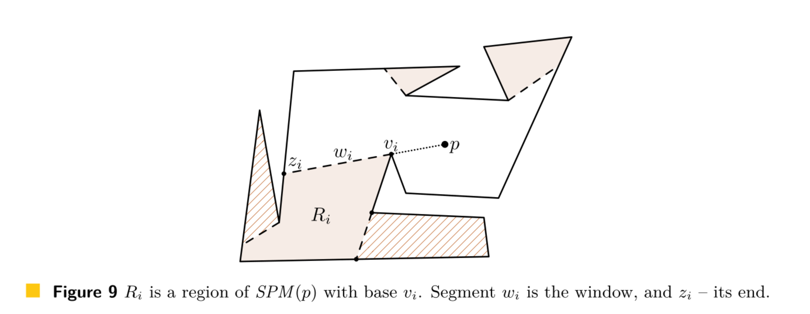

Attraction-convexity and normal visibility
To be completed
Inverse Attraction Regions
Computation
In this section, we demonstrate how to compute the inverse attraction region of a point within a simple polygon in O(n log n) time.
Let region Ri of the shortest path map SPM (p) consist of all points t such that the last segment of the shortest path from p to t is vi t (Figure 9). Vertex vi is called the base of Ri. Extend the edge of SPTr (p) ending at vi until the first intersection zi with the boundary of P. Call the segment wi = vi zi a window, and point zi – the end of the window; window wi is a boundary segment of Ri.

We will construct a part of the inverse attraction region of p inside each region of the shortest path map SPM(p) independently. A point in a region of SPM(p) attracts p only if its attraction can move p into the region through the corresponding window.
Complexity
To be completed